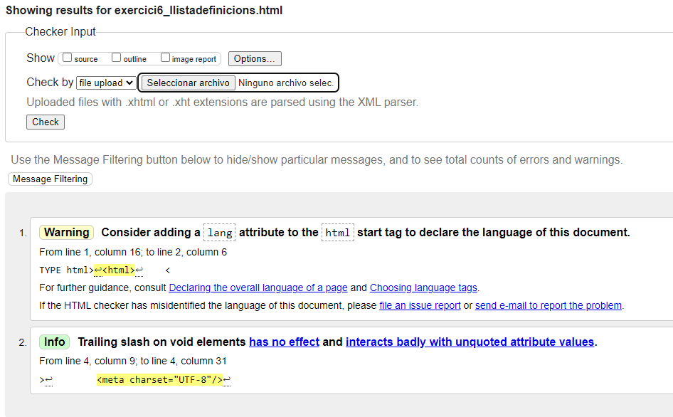

- Htpp
- -"Hypertext Transfer Protocol", es el nombre de un protocolo el cual nos permite realizar una petición de datos y recursos, como pueden ser documentos HTML.
- HTML
- -"HyperText Markup Language", es un lenguaje descriptivo que especifica la estructura de las páginas web
- URL
- -"Uniform Resource Locator", es una cadena de caracteres que se utiliza para identificar y ubicar de manera única un recurso en internet, como una página web, una imagen, etc.
- TCP/IP
- - es un conjunto de protocolos de comunicación utilizados para interconectar dispositivos en redes de ordenadores
- Internet
- - es una red global de computadoras y otros dispositivos electrónicos interconectados a través de una variedad de tecnologías de comunicación,
- W3C
- - es una organización internacional que se dedica al desarrollo de estándares abiertos para la World Wide Web.
- Mozilla Foundation
- - es una organización sin fines de lucro que se dedica a promover la apertura, la innovación y la participación en Internet.
Volver al index
